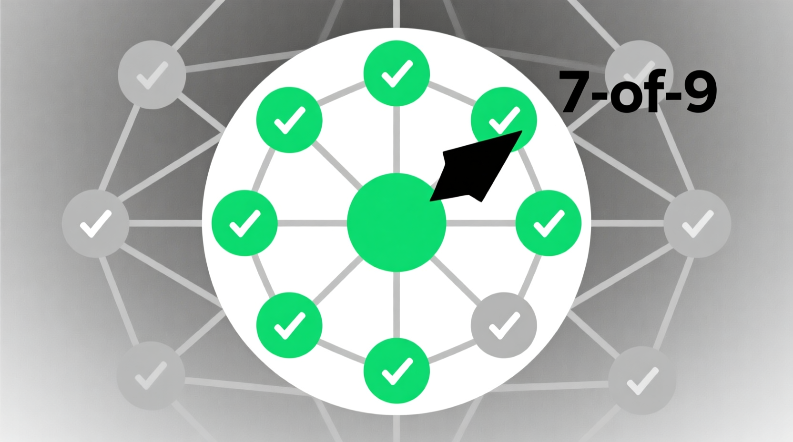
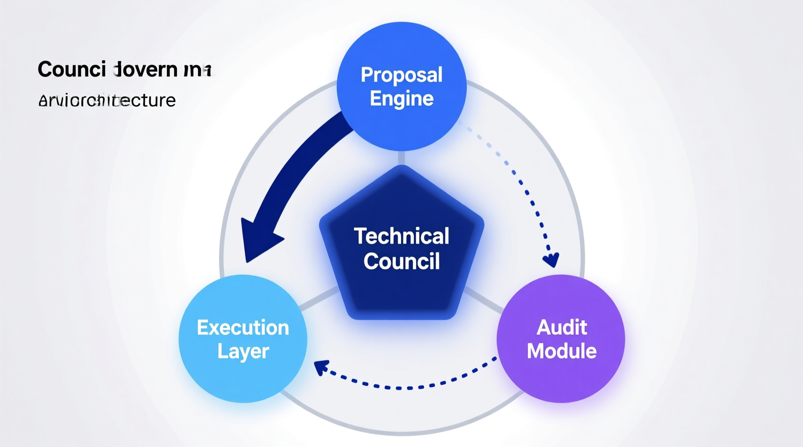
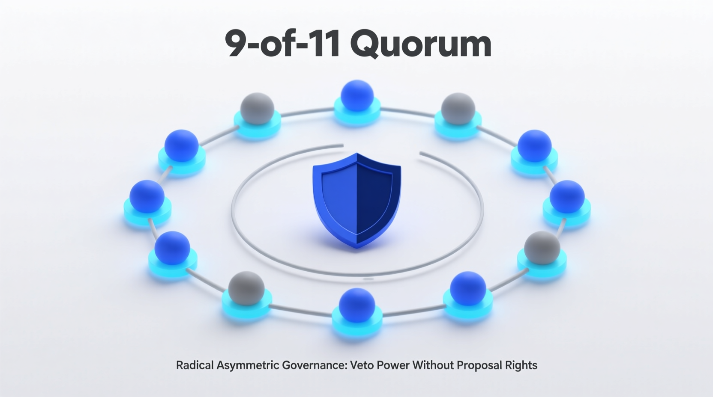
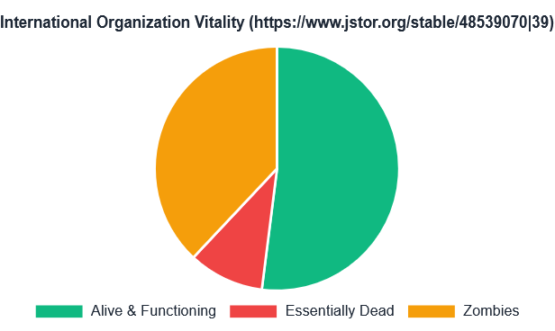
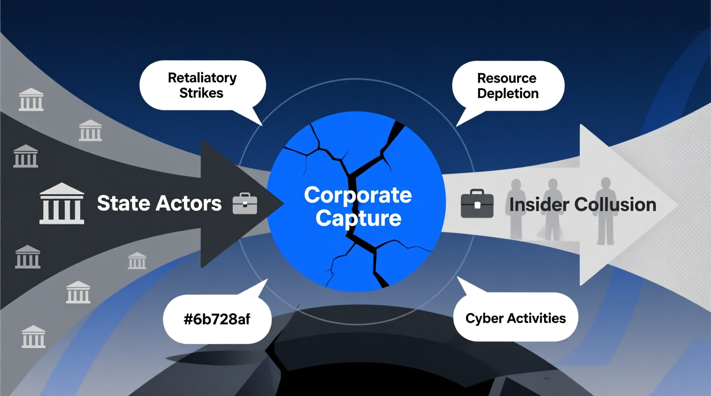
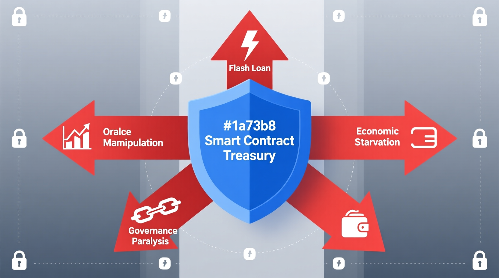
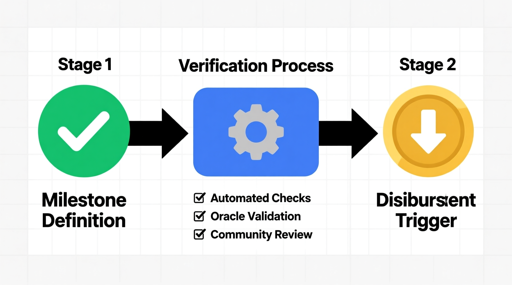
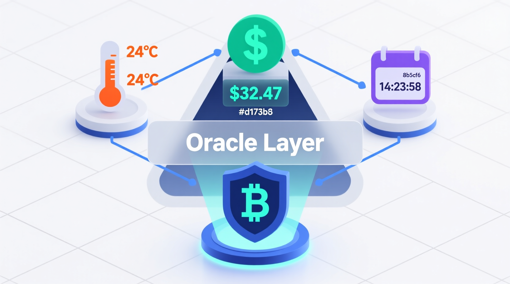

A Constitutional Governance Blueprint for Ternary Logic
This document defines the constitutional governance architecture for the Ternary Logic autonomous protocol, ensuring long-term survivability, operational neutrality, and perpetual auditability under the non-negotiable No Switch Off mandate.
What This Architecture Guarantees
Any software can be modified by humans, by advanced AI systems, or by state-level adversaries with sufficient access. Constitutional governance written in smart contract code is only as strong as the hardware beneath it. The sole path to genuine enforcement of the Immutable Mandates is DITL hardware, where Epistemic Hold is not a policy commitment but a physical voltage state (NULL / half-Vdd) that cannot be overridden by software, root access, kernel compromise, or firmware manipulation. Software governance provides accountability, auditability, and coordination. Hardware governance provides enforcement. Both are necessary. Neither alone is sufficient.
The Immutable Mandate and Constitutional Boundaries
The Three Mandates
The Immutable List
The following elements are constitutionally immutable. Any proposal, vote, or smart contract function call attempting to modify, suspend, or reinterpret any element on this list is void ab initio.
- The Eight Pillars of Ternary Logic
- The triadic logic structure of the system (+1, 0, −1)
- The causal sequence: Epistemic Hold → Immutable Ledger → Decision Logs → Governance
- The Three Mandates: No Spy, No Weapon, No Switch Off
- The evidentiary requirements that form Ternary Logic's integrity
- The existence and fundamental function of Anchors and the requirement for cross-chain notarization
- The foundational Goukassian Principle
"Most constitutions enumerate freedoms. TL's constitution enumerates forbidden futures: No Spy, No Weapon, No Switch Off. Everything else is engineering."
Scope of Governance
Governance bodies are granted limited and enumerated powers for the sole purpose of system maintenance, extension, and optimization. All powers not explicitly granted are reserved by the protocol itself.
Permitted operational parameters subject to governance: Anchor selection, certification criteria, and rotation; cryptographic upgrades; protocol performance tuning; audit cadence; Treasury disbursement rules; node operator certification; emergency fallback procedures limited exclusively to network continuity.
The Tri-Cameral Governance Architecture
This Article defines the separation of powers among the three governing bodies. The tri-cameral structure - Technical, Ethical, and Economic - is designed to create a three-body equilibrium preventing consolidation of power and system capture by ensuring no single body possesses the authority to unilaterally control the protocol's code, its ethical application, or its financial resources.
"We solved the centralization problem by weaponizing the three-body problem: three chambers in permanent orbital tension, where any two colluding merely destabilize the third, and the system corrects."
Voting Procedures
If either body reaches quorum but cannot reach required majority within the defined decision window, the proposal enters a Time-Bound Epistemic Hold. Both bodies must provide written justifications. At expiration, the proposal defaults to rejection. Caution is the default posture. This mirrors the hardware-layer Epistemic Hold at the governance layer - the same principle operating at two different levels of abstraction.
Protocol Stewardship and Upgrade Authority
Composition and Terms
9 members. 3-year staggered terms (one-third rotating annually). Maximum 3 consecutive terms (9 years total). Mandatory 3-year cool-down thereafter. Eligibility requires world-class expertise in cryptography, distributed systems, formal verification, protocol engineering, or large-scale network security. No more than 2 members from any single entity.


Vote Rights Architecture
The Technical Council holds the exclusive right to submit technical upgrade proposals to the Governance Contract. No other body may initiate a technical proposal. This exclusivity is the deliberate constitutional choice separating proposal power from veto power.
The Technical Council's Type 1 emergency Anchor migration authority, exercisable unilaterally by simple majority with no Custodian involvement, is the single largest capture vector in the governance architecture. A compromised 5-of-9 Council majority could declare a false emergency and migrate governance state to an adversary-controlled chain. Recommended remedy without God Mode: mandatory 72-hour Custodian observation-and-escalation window before execution finality, with retrospective Type 2 reversal right.
Exclusive proposal rights without a Custodian counter-proposal mechanism reproduces the EU Commission agenda-setting dominance pattern. Capture will appear as narrowing of the proposal space, not override of veto. The Custodians receive only proposals pre-shaped by the Council, with no ability to force consideration of alternatives.
Diamond Standard (EIP-2535) and Upgradeability
ERC-2535 is Final status as of 2023. VERIFIED ERC-1822 (UUPS) is formally Stagnant but dominates production via OpenZeppelin UUPSUpgradeable with EIP-1967 storage slots and ERC-7201 namespaced storage (Final). VERIFIED
Industry consensus 2025-2026 has shifted away from diamonds for governance-tier contracts unless the 24KB size limit forces the pattern. HIGH Nick Mudge (original author) is now proposing ERC-8109 as a simplified successor. The immutable Diamond Proxy plus four UUPS facets remains architecturally sound for "maintain but not mutate."
Anchor Host Chains (Article VI)
Minimum five Anchor Host Chains satisfying verifiable decentralization, cryptographic security, long-term liveness, and jurisdictional diversity. The "any one Anchor survives" guarantee: as long as one chain remains uncompromised, canonical TL governance state persists and can be migrated.
Defensible minimum anchor set as of Q2 2026: Bitcoin (Nakamoto coefficient 4), Ethereum (coefficient 2), Cardano (coefficient 22), Polkadot (coefficient 178 - highest of tracked L1s), Tezos (coefficient 14). HIGH
The "any one honest prover plus safe source chain equals integrity" property is achievable in production only for Ethereum-Cosmos through IBC Eureka (Succinct SP1, launched April 10, 2025). All 2022 major relay failures (Wormhole $320M, Ronin $624M, Nomad $190M, Multichain $125-210M) involved federated multisig operator sets. Governance.md contains no protocol-level deadlock resolution mechanism if relay infrastructure is compromised. Recommended: mandate IBC-class trust-minimized relay, explicitly excluding federated multisig relay sets.
Post-Quantum Readiness
Governance.md is silent on post-quantum cryptography. ECDSA secp256k1, BLS12-381, and KZG commitments are all Shor-vulnerable. VERIFIED NIST finalized FIPS 203 (ML-KEM), 204 (ML-DSA), 205 (SLH-DSA) on August 13, 2024. NSA CNSA 2.0 deprecates classical primitives after 2030 and disallows after 2035. Gidney (May 2025) reduced the RSA-2048 cracking requirement to under 1 million noisy physical qubits. HIGH
A PQC migration can be executed within Article V without violating Article I - it is a Type 3 major cryptographic upgrade to the four upgradeable facets, not a modification of the Immutable List. ML-DSA-87 is the NSA CNSA 2.0 primary selection. Governance.md should schedule a pre-2030 Type 3 PQC migration proposal. GAP-ARCHITECTURAL
Mandate Guardianship Over Multi-Decade Horizons
Veto Power Architecture
11 members. 4-year staggered terms. Maximum 2 consecutive terms (8 years total). Mandatory 4-year cool-down. The Custodians' authority is defined entirely by what they can block, not what they can initiate. This radical asymmetry with limited precedent in governance systems.

The mandatory veto obligation - Custodians must veto any proposal creating credible risk of violating any Immutable Mandate - is enforceable only at the social and legal layer, not on-chain. Smart contract voting logic cannot distinguish a principled vote from a compelled one. VERIFIED
Anticipatory compliance is a parallel capture mechanism: the Technical Council proposes only what it knows the Custodians will accept, effectively nullifying the separation of powers without a single veto being cast. The veto threat shapes the proposal space invisibly. Governance.md provides no mechanism to prevent this dynamic.
9-of-11 Quorum as Adversarial Target
Removing 3 Custodians - through death, incapacitation, legal compulsion, coordinated resignation, or LLM-assisted pressure campaigns - breaks quorum and paralyzes all Type 2 and Type 3 governance. The WTO Appellate Body quorum collapse (December 10, 2019) demonstrates that a single state-level adversary can paralyze a body requiring consensus replenishment through inaction alone. The Body has remained non-functional for six years. HIGH

Recommended without God Mode: pre-confirmed alternates (vetted but not seated unless primary departs), geographic quorum requirements such that no single jurisdiction's legal compulsion can drop more than 2 members, verifiable remote attestation of presence distinguishing physical detention from resignation.
Capture Vector Analysis

State capture - NIST / Dual_EC_DRBG (2004-2014): NSA employees in the standards committee; $10M payment to RSA disclosed; 9 years from standardization to retraction. A captured Custodian majority that defers to state technical expertise would not have prevented Dual_EC. HIGH
Corporate capture - ISO/IEC OOXML fast-track (2006-2008): Diversity requirements did not prevent capture; the adversary populated each diversity category with aligned members. Martin Bryan resigned as convenor citing capture. HIGH
Insider collusion - XZ Utils / "Jia Tan" (2021-2024): 2.6-year multi-year social engineering of an open-source maintainer via sockpuppet pressure campaigns. Only 8 of hundreds of commits were malicious. Linux Foundation April 2026 report explicitly warns this template is being replicated. HIGH
Any Custodian who votes against a proposal they believe violates a Mandate should be able to publish a dissenting constitutional opinion immutably logged on-chain, even if the proposal passes. This creates a public record of constitutional disagreement for future accountability without adding any override mechanism.
Human-AI Adversarial Frontier and APGT Ceiling
The Stewardship Custodian architecture has no defenses against AI-assisted capture that are qualitatively different from defenses against human-only capture. HIGH
Diel et al. (Computers in Human Behavior Reports, December 2024), meta-analysis of 56 studies with 86,155 participants: overall human detection of synthetic media at 55.54% (95% CI 48.87-62.10), with every modality's confidence interval crossing chance. The January 2024 Hong Kong deepfake CFO fraud ($25.6M via multi-person synthetic video conference) is the canonical operational precedent. VERIFIED
APGT Ceiling Assessment: the 9-of-11 quorum fails against state-level legal compulsion over 30%+ of Custodian jurisdictions; the mandatory veto obligation fails under forged synthetic evidence at Q2 2026 detection rates. The Immutable Mandates themselves require DITL hardware enforcement - software-layer governance alone is insufficient against APGT. HIGH
Honest conclusion: The Stewardship Custodian model assumes a threat environment that has already changed as of Q2 2026. GAP-ARCHITECTURAL
Global Risk Institute Quantum Threat Timeline Report 2025 (seventh edition, April 2026): 28-49% probability of CRQC within 10 years - the most optimistic in the survey's 7-year history. VERIFIED
Time-Bound Epistemic Hold in Governance
Default-to-rejection is the correct failure mode - aligned with nuclear weapons surety "always/never" doctrine, IAEA safeguards default, FDA Emergency Use Authorization, and financial market circuit breakers. NASA Challenger is the cautionary counter-example: Marshall's Larry Mulloy inverted the burden of proof, demanding contractors prove it was unsafe to launch. VERIFIED
The governance-layer Epistemic Hold and the hardware-layer Epistemic Hold are the same principle at different layers: "deliberate pause with positive-evidence requirement before proceeding." The governance version pauses proposals; the hardware version physically blocks execution. Escrow is a state, not a delay - the software version defaults to rejection after a window; the hardware version physically blocks execution until attestation. VERIFIED
- Staggered 4-year terms with 8-year cap
- 4-year cool-down period
- Tri-cameral simultaneous-capture requirement
- Default-to-rejection at window expiry
- Publication-of-reasons as accountability record
- 9-of-11 quorum (WTO Appellate Body pattern)
- Mandatory veto: social layer only
- Nominating Committee external-expert selection
- Anti-capture review: alert fatigue vulnerable
- No-more-than-2-per-entity rule doesn't bind ideology
- Evidence authentication by human review
- Classical cryptography under HNDL posture
- Investigation depth under alert fatigue
- Undetected covert coordination by minority
The Autonomous Fiduciary
Autonomous Fiduciary Design
The Treasury has no vote rights. This is not an omission - it is the design. It is an autonomous fiduciary agent: it collects network fees automatically and disburses funds automatically upon on-chain verification of pre-defined milestones. No human approval is required for disbursement once rules are encoded. The smart contract executes.
"The Treasury is not a wallet with a committee. It is a financial perpetual motion machine that funds its own conscience, dispensing virtue on a proof-of-work basis."

No comparable autonomous on-chain treasury with no admin key, no pause guardian, and no emergency shutdown has survived adversarial testing in production as of Q2 2026. Every major production treasury retains privileged override. The TL Treasury's "no vote, no discretion" design is constitutionally unprecedented. HIGH NOVEL
Oracle and Milestone Verification


Milestone verification reduces to trust in oracle, attester, or dispute-game. No trustless production solution exists for off-chain milestones. Four categories: EXTCODEHASH verification (trustless for bytecode, not intent), EAS attestation (trust concentrated in attester set), UMA Optimistic Oracle v3 (bond + liveness + dispute), zkVM proofs (SP1, RISC Zero) for deterministic computation only. VERIFIED
If Treasury milestone verification requires an oracle, the oracle becomes a potential God Mode vector. Oracle-free verification is possible only for milestones that are cryptographically verifiable on-chain. For off-chain milestones, a trusted third party is currently required as of Q2 2026. The No God Mode kill criterion makes this an architectural constraint. The TL Treasury must make its trust-relocation explicit at rule-encoding time.
If no new Treasury rules are approved for 24 months (economic starvation via rule-freeze), the Treasury should revert to a constitutionally defined minimum allocation - for example 30% to node operators, 20% to audit fund. This prevents governance paralysis from starving the system without adding any override mechanism.
Attack Vectors and Mitigations
| Attack | Mechanism | TL Vulnerability | Mitigation (No God Mode) |
|---|---|---|---|
| Beanstalk flash-loan (April 2022, $182M) | Flash-loan voting power, emergencyCommit() in one block | Prevented: no token-weighted voting; no emergencyCommit() | Attestation that no voting weight acquired within N blocks of vote |
| Compound Prop 62 bug (Sept 2021, ~$62M unrecovered) | Distribution bug; timelock prevented fast fix; permissionless drip() | Equally vulnerable: rule-bug executes identically; timelock amplifies loss | Per-epoch maximum disbursement circuit-breakers encoded in rules |
| Tornado Cash governance takeover (May 2023) | Malicious proposal payload minted 1.2M votes to attacker | Partially mitigated by two-body structure; requires technical payload review not just English description | Mandate formal verification of payload bytecode before Custodian window opens |
| Compound "Humpy" Prop 289 (July 2024, $24M) | Open-market accumulation of COMP voting power; weekend timing | Not directly vulnerable: no token voting; attack surface shifts to body-membership capture | Staggered membership; institutional diversity requirements |
| Tribe DAO dissolution (May-Aug 2022) | Governance deadlock; autonomous contracts continued collecting fees while DAO was dead | Directly applicable: Treasury continues collecting during governance freeze | Default fallback allocation rule; 24-month trigger |
Automated Slashing: False Positive Precedents
The Revocation Contract inherits every known automated-slashing false-positive pattern: Medalla testnet (August 2020, 3,000+ slashing events from Prysm clock-skew bug, participation dropped from 80% to 5%); RockLogic/Lido (April 2023, 11 validators, infrastructure misconfiguration, ~11.19 ETH penalties); SSV Network (September 2025, 40 validators, Ankr maintenance misconfiguration). VERIFIED
Polkadot's 27-day pre-enforcement grace period is the direct production precedent for rule-level mitigation: slashing enters an "unapplied state transition" during which governance can reverse, without god-mode override. TL should encode a minimum 7-day pre-enforcement delay on all revocations as a rule, not a pause. VERIFIED
Zombie Governance: Treasury During Layer 1 Compromise
Under Article VIII No Switch Off, the Treasury cannot be halted during L1 compromise. This is a constitutional tension but the intended behavior: the constitution accepts continued operation during compromise as the cost of absolute uncompromised autonomy. HIGH
Production 51% attack data: Ethereum Classic August 2020 - three attacks within one month, approximately $7M combined. Verge February 2021 - 560,000+ block reorganization (approximately 200 days of history erased). VERIFIED
Maximum financial exposure during a 30-day compromise window is bounded only by per-epoch disbursement rules encoded at Joint-Approval time - a strong argument for mandatory per-epoch caps. MakerDAO's Oracle Security Module (1-hour hop delay, permissionless poke(), no single admin override) is the strongest production precedent for time-delay mitigation without god-mode. NOVEL application
GAP-ARCHITECTURAL: No production deployment of DITL or NCL governance/safety hardware has been located. DITL remains at design specification, transistor-level simulation, FPGA demonstration, and small research-ASIC stages. Theseus Logic Inc. (Karl Fant, 1996) is defunct. The Atomic Auditability paper presents a proposed "Ternary Governance Core" ASIC block - a roadmap requirement, not deployed infrastructure. The constitutional hardware floor is an architectural specification, not a deployed artifact, as of Q2 2026.
Integrated Assessment and Priority Updates
Two-Layer Architecture
| Property | Layer 2 Software (Can do) | Layer 1 Hardware (Enforces) |
|---|---|---|
| Adapt | ✓ Rotate members, schedule PQC migrations, arbitrate edge cases, evolve operational parameters | ✗ A fabricated chip is a fabricated chip |
| Physically enforce | ✗ Constitutional text is a coordination device; a captured institution can fail to apply it | ✓ Blocks execution paths without prior Escrow entry + audit-token emission |
| Eliminate Ghost Governance | ✗ Software checkpoints are speed bumps, not Escrow states; crash between write and send produces Ghost Governance | ✓ Execution and audit share the same physical commit boundary by construction |
| Survive root access | ✗ Kernel compromise can modify binaries running governance logic | ✓ Hysteretic C-element thresholds are below the instruction-set architecture |
| Layer 1 compromised, Layer 2 intact | Governance continues procedurally; Mandates become aspirational only | All physical guarantees lost |
| Layer 2 compromised, Layer 1 intact | Governance coordination fails; system may be unable to adapt | Hardware continues to enforce Mandates regardless of governance votes |
The Rule-Accretion Pathway: Novel Finding
The three bodies, acting through their constitutionally permitted channels, can cross the janitor/architect boundary through rule-encoding accretion without any single vote being visibly architectural. Three pathways: (1) interpretive-lock: operational rules cumulatively narrow the Eight Pillars' practical meaning without amending Article I; (2) budget-as-constitution: Treasury milestone rules structurally defund research directions without formally prohibiting them; (3) precedent-accretion: Custodian veto patterns establish de facto constitutional interpretations narrower than Article I's text. This is a present Constitutional Tension and a future Constitutional Violation absent structural remedies.
Key Findings per Section
Constitutional Integrity: Is the Architecture Within the Janitor Role?
Formally yes. Operationally, with one identified violation and one identified tension requiring remedy.
The Technical Council stays within the janitor role in its defined scope. The Stewardship Custodians stay within the janitor role textually, with risk of drift toward architectural authority over multi-decade horizons through procedural innovation. The Smart Contract Treasury stays within the janitor role because it has no discretion. The only body whose defined scope crosses into architect territory is the Technical Council under its Type 1 emergency migration power.
Migration of Anchor chains changes where TL is physically instantiated. The "any one Anchor survives" guarantee is a constitutional property, not an operational convenience. The Technical Council's unilateral power to alter the Anchor set therefore touches the foundation, crossing the boundary between janitor and architect. Remedy without God Mode: 72-hour Custodian observation window with retrospective Type 2 reversal right. This does not add a pause function; the migration occurs immediately. It adds constitutional accountability after the fact.
Priority Update Table for Governance.md
| # | Update | Article | Priority | Fits Article I? |
|---|---|---|---|---|
| 1 | 72-hour Custodian observation-and-escalation window on Type 1 emergency Anchor migrations; retrospective Type 2 reversal right | Art. IV, Art. VI | [CRITICAL] | Yes |
| 2 | Time-bound escalation pathway for cryptographically-urgent proposals under sustained Custodian veto - resolves PQC urgency deadlock | Art. IV, new PQC section | [CRITICAL] | Yes |
| 3 | Explicit PQC migration schedule keyed to NIST FIPS 203/204/205 timelines; ML-DSA-87 primary, SLH-DSA fallback, 2030 deadline | Art. V or new Article | [CRITICAL] | Yes |
| 4 | Pillar Interpretation clause: operational rules interpreted against Article I, never the reverse; Mandatory Pillar Impact Statements on all Type 3 proposals | Art. I, Art. IV | [CRITICAL] | Yes |
| 5 | Sunset clauses on operational rules with auto-expiry and explicit re-approval - breaks rule-accretion path dependence | Art. IV, Treasury facet | [HIGH] | Yes |
| 6 | Custodian counter-proposal right scoped only to formally vetoed proposals - breaks EU Commission agenda-setting monopoly | Art. III, Art. IV | [HIGH] | New constitutional text |
| 7 | Rule-level circuit-breakers and per-epoch disbursement caps in Treasury facet; 24-month default fallback allocation | Art. III, Art. V | [HIGH] | Yes |
| 8 | 7-day pre-enforcement grace period on Revocation actions (Polkadot pattern) - mitigates oracle false-positive mass revocation | Art. III (Revocation) | [HIGH] | Yes |
| 9 | Quorum-collapse safeguard: pre-confirmed alternates; geographic quorum requirements; 30-day vacancy replacement protocol | Art. II, Art. IV | [HIGH] | New constitutional text |
| 10 | Mandate IBC Eureka or equivalent trust-minimized relay; explicitly exclude federated multisig relay sets | Art. VI | [HIGH] | Yes |
| 11 | Minority veto publication right: any Custodian may publish dissenting constitutional opinion even if proposal passes | Art. IV | [HIGH] | Yes |
| 12 | Conflict-of-interest disclosure requirements for Custodians - notarized on-chain annually | Art. III | [MODERATE] | Yes |
| 13 | Complete Succession Charter with full procedural specification | Art. X reference | [MODERATE] | Yes |
| 14 | On-chain Preamble disclosure: current deployment is a software speed-bump regime, not a DITL hardware regime | Preamble, Art. I | [MODERATE] | Yes |
| 15 | Document Ghost Governance as constitutional goal achievable only at hardware layer; name it in constitutional text | Preamble, Art. I | [MODERATE] | New constitutional text |
"Hardware resists last. Institutions fail first. The Goukassian Principle in LTL form, G(execute → P(escrow_recorded ∧ auditable)), is satisfiable in silicon by construction and unsatisfiable in software by any method known in Q2 2026. The framework is honest about this only if its Preamble is honest about it."
Supporting Research Documents
Deep Research Series
Four standalone reports, one per governance body plus synthesis. Each carries its own verdict, confidence markers, adversarial failure analysis, and footnotes. Covers tri-cameral design, Diamond Standard status, UUPS vulnerability history, PQC readiness, capture vector analysis, APGT ceiling, rule-accretion constitutional tension, DITL fabrication status, Ghost Governance formalization, Zombie Governance 51% attack quantification, and 15-item priority update table.
Independent Analysis Series
A parallel research program covering the same three governance bodies independently. Adds original contributions: veto atrophy and anticipatory compliance, minority veto publication right, FEC quorum loss precedents, conflict-of-interest disclosure recommendations, default fallback allocation for Treasury starvation, revocation challenge period with bond posting, cross-chain Treasury model, and mandate interpretation canon.
Companion Research
Companion document covering Ternary Logic as constitutional triadic governance architecture for high-stakes automated decision-making. Broader scope than the four-section program: constitutional philosophy level.